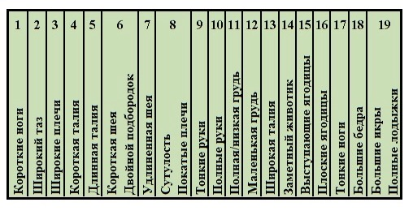
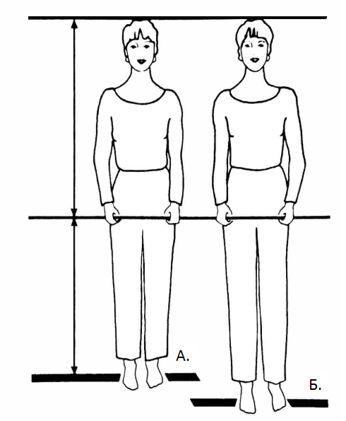
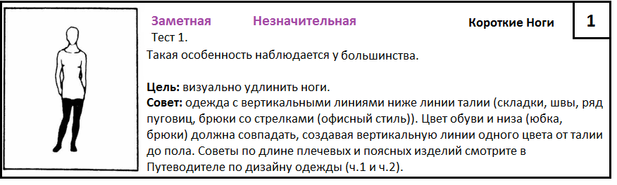
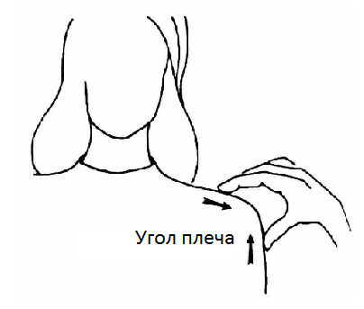
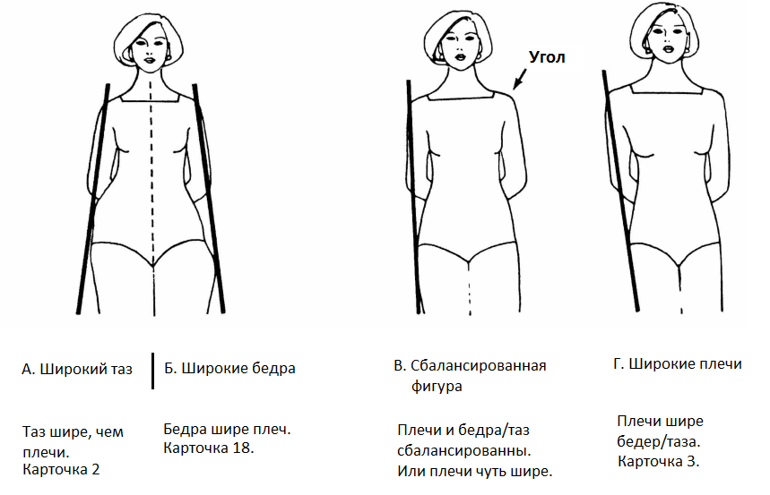
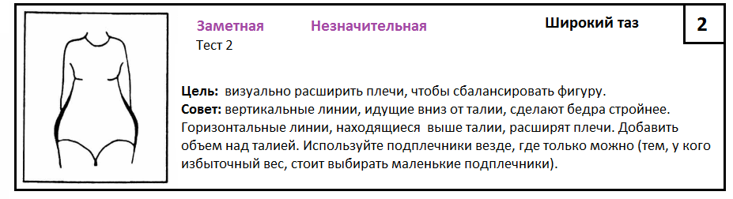
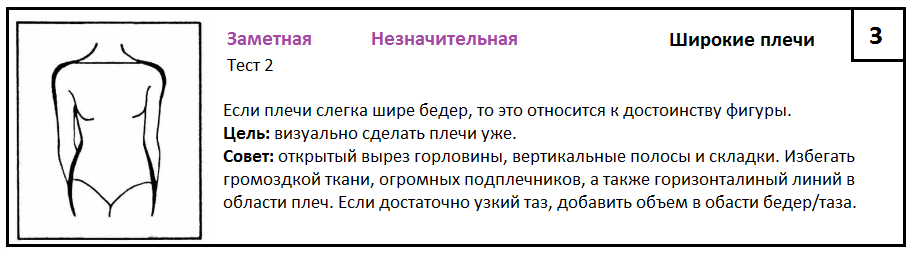

Что нам потребуется для проведения теста:
- 2 ровные планки/палки, около 1 м. Как пример, карниз, лыжи, линейки, метр для выкраивания.
- Веревка, не короче 1,2 м (ремешок, шнурок, лента).
- Друзья-помощники. Зеркало в полный рост, если у вас только один помощник.
- Карандаш и карточки, чтобы отмечать особенности.
- И вот такая табличка, где нужно будет обвести только Заметные особенности (Незначительные не включаем) в конце теста:

P.s. тест неприхотлив в выборе одежды, поэтому не нужны купальники и спортивное трико, достаточно одеть что-то простое и удобное.
Как альтернатива: можно провести этот тест на компьютере/планшете с помощью графического редактора (Paint). Тогда для этого нужны фото в купальнике в трёх проекциях: вид спереди (руки спрятать за спину), сбоку (руки вдоль тела) и сзади (руки слегка отвести в сторону). Фотоаппарат должен находится на уровне груди в 2,5 - 3 м от модели съемки. Далее я покажу реализацию этого метода в примере разбора.
Итак,
- если особенность фигуры такая же, как на изображении, то обводим Заметная;
- если отдаленно похожа, т.е. не так очевидна, то Незначительная;
- если не можете решить между Заметной и Незначительной, то без сомнений это Незначительная особенность.
В каждой карточке вы найдёте: Картинку, Вид особенности, Название особенности, Номер карточки, Цель и Совет при Незначительных особенностях. Для Заметных особенностей Советы с иллюстрациями будут после теста в отдельных статьях.

Обращение к помощникам: пожалуйста, будьте честны в оценке фигуры, не нужно притворяться, что все идеально; вы этим не поможете. Говорите так, как вы видите, пусть это может и огорчить тестируемого. Ведь этот тест и нужен для того, чтобы найти слабые стороны и, используя правильные советы, выглядеть лучше.

Тест 1. Длина ног и туловища.
Модель: снять обувь и встать на расстояние 1,5 м (можно дальше) от группы помощников или зеркала. Поднять и согнуть ногу в колене под прямым углом (представьте цаплю :-)). Положить планку на сгиб бёдра и, держа её двумя руками, зафиксировать положение параллельно полу, т.е. горизонтально; опустить ногу.
Помощники: помочь выровнять планку, если она не параллельна. Вторую планку, как показано на рисунке ниже, положить сверху на голову модели, она должна быть также параллельна полу (плечам). Сравните верхнюю половину тела с нижней.

А. Короткие ноги.
- Нижняя половина слегка короче верхней: обведите Незначительная в Карточке 1.
- Нижняя половина явно короче верхней: обведите Заметная в Карточке 1.
Б. Верхняя и нижняя часть сбалансированы.
- Длина ног, равная или больше длины туловища, является достоинством фигуры.

Небольшое дополнение: бывает так, что девушки среднего роста (около 163 см) обладают короткими ногами, тогда выбор низа (штаны, джинсы) лучше осуществлять в магазинах, где есть специальные секции для девушек с маленьким ростом (petite).
Тест 2. Ширина бёдер и плеч.
В идеале ширина плеч равна или слегка больше ширины бёдер.
Модель: спрятать руки сзади, встать лицом к группе помощников/зеркалу.
Помощники:
-
Найдите угол плеча (где встречается плечо и рука) как показано на рисунке.

-
Положите один конец планки на угол плеча спереди, а другой конец - на самую широкую часть бёдер (см. рисунок ниже). Оцените, под каким углом расположена планка в пространстве, выберите соответствующее изображение и следуйте инструкциям под ним.


